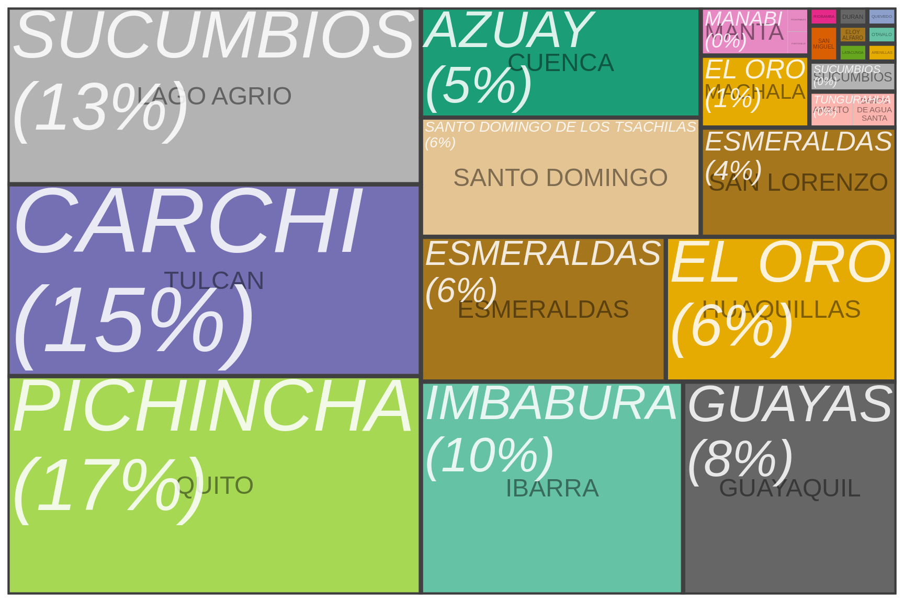

Cantons and provinces entering narrative data
| Canton and provinces | |||
|---|---|---|---|
| The number of reports in the multi-text (narrative) fields | |||
| Canton | Frequency | Relative frequency (canton) | Relative frequency (province) |
| PICHINCHA | |||
| QUITO | 956 | 1.000 | 0.181 |
| CARCHI | |||
| TULCAN | 806 | 1.000 | 0.152 |
| SUCUMBIOS | |||
| LAGO AGRIO | 766 | 0.996 | 0.145 |
| SUCUMBIOS | 3 | 0.004 | 0.001 |
| IMBABURA | |||
| IBARRA | 550 | 1.000 | 0.104 |
| GUAYAS | |||
| GUAYAQUIL | 508 | 0.983 | 0.096 |
| DURAN | 9 | 0.017 | 0.002 |
| ESMERALDAS | |||
| ESMERALDAS | 339 | 0.589 | 0.064 |
| SAN LORENZO | 229 | 0.398 | 0.043 |
| ELOY ALFARO | 8 | 0.014 | 0.002 |
| SANTO DOMINGO DE LOS TSACHILAS | |||
| SANTO DOMINGO | 335 | 1.000 | 0.063 |
| AZUAY | |||
| CUENCA | 322 | 1.000 | 0.061 |
| EL ORO | |||
| HUAQUILLAS | 296 | 0.858 | 0.056 |
| MACHALA | 49 | 0.142 | 0.009 |
| MANABI | |||
| MANTA | 38 | 0.950 | 0.007 |
| PORTOVIEJO | 2 | 0.050 | 0.000 |
| TUNGURAHUA | |||
| AMBATO | 15 | 0.517 | 0.003 |
| BAÑOS DE AGUA SANTA | 14 | 0.483 | 0.003 |
| BOLIVAR | |||
| SAN MIGUEL | 14 | 1.000 | 0.003 |
| COTOPAXI | |||
| LATACUNGA | 11 | 1.000 | 0.002 |
| LOS RIOS | |||
| QUEVEDO | 10 | 1.000 | 0.002 |
| CHIMBORAZO | |||
| RIOBAMBA | 7 | 1.000 | 0.001 |
| LOJA | |||
| LOJA | 2 | 1.000 | 0.000 |
| SANTA ELENA | |||
| LA LIBERTAD | 2 | 1.000 | 0.000 |
Treemap plot showing canton and province reporting frequencies.
